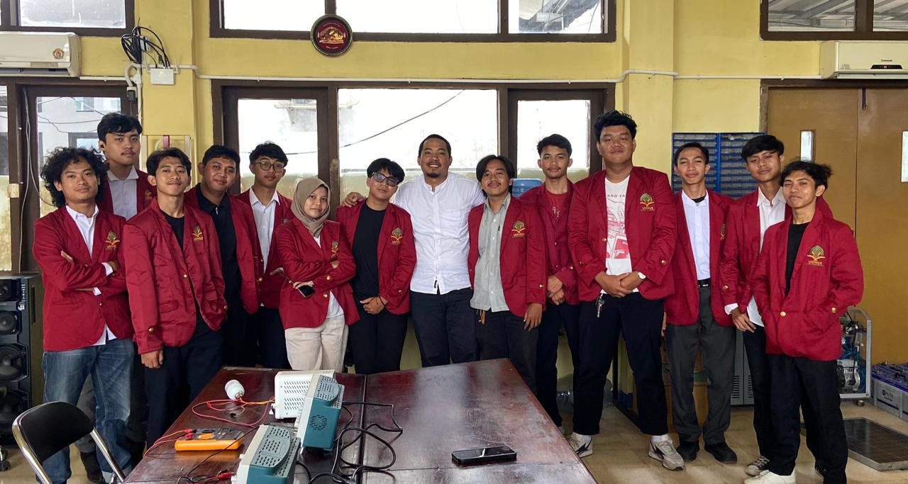
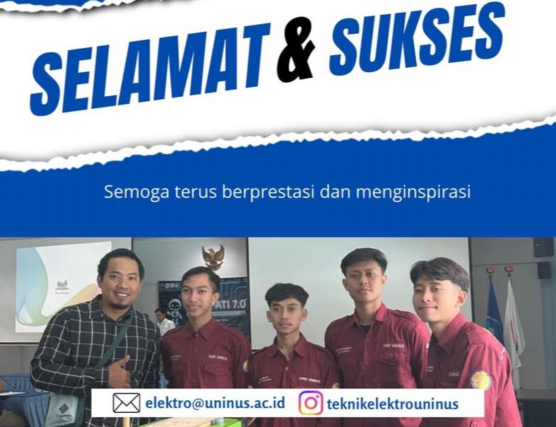
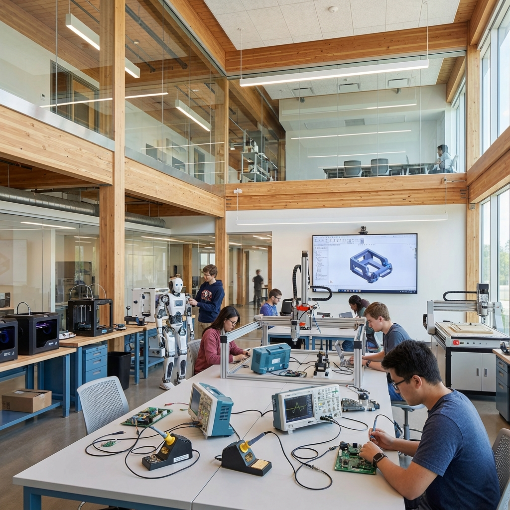

Fakultas Teknik Universitas Islam Nusantara merupakan salah satu fakultas unggulan yang berkomitmen menghasilkan lulusan berkualitas di bidang teknik. Dengan kurikulum yang senantiasa diperbarui sesuai kebutuhan industri dan dilengkapi fasilitas modern, kami mempersiapkan mahasiswa untuk menjadi insan teknik yang kompeten dan berkarakter.
Kami memiliki berbagai program studi yang telah terakreditasi dengan baik, didukung oleh dosen berpengalaman dan lingkungan belajar yang kondusif untuk pengembangan potensi akademik maupun non-akademik mahasiswa.

Bergabunglah dengan Fakultas Teknik UNINUS dan jadilah bagian dari inovasi masa depan. Kami menawarkan pendidikan berkualitas tinggi dengan pendekatan praktis dan dukungan fasilitas modern.
Daftar SekarangKurikulum terintegrasi yang dirancang sesuai kebutuhan industri dengan porsi teori dan praktik yang seimbang untuk menghasilkan lulusan siap kerja.
Program penelitian dan pengabdian masyarakat yang melibatkan dosen dan mahasiswa untuk memberikan kontribusi nyata bagi kemajuan bangsa.
Mahasiswa dan alumni telah meraih berbagai prestasi di tingkat nasional dan internasional, membuktikan kualitas pendidikan yang kami berikan.
Kerjasama strategis dengan berbagai industri, instansi, dan lembaga untuk memastikan lulusan memiliki koneksi dan peluang karir yang luas.
Fakultas Teknik kembali meluluskan 150 sarjana baru yang siap berkontribusi untuk negeri...
Baca Selengkapnya →
Prestasi membanggakan kembali diraih oleh Tim Robotika dalam ajang Kontes Robot Indonesia...
Baca Selengkapnya →
Dekan Fakultas Teknik meresmikan laboratorium baru untuk menunjang praktikum simulasi...
Baca Selengkapnya →